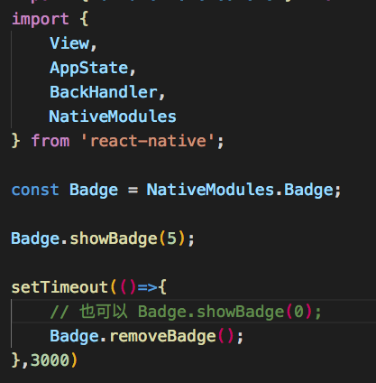

角标
应用角标是iOS的一个特色,原生Android并不支持。
第三方深度定制过的android系统有此类功能,如：三星、小米、魅族、华为等。
各方产商定制方法各不相同,我选择使用第三方开源的项目实现。
环境
1 | "react": "16.3.1", |
ShortcutBadger 引入
1.下载
通过 gitgit clone https://github.com/leolin310148/ShortcutBadger.git
或 直接下载zip文件
ShortcutBadger github地址
2.解压 将文件放入工程 android 文件夹中
也可将文件放在其他位置
文件修改
1.android/settings.gradle
文件中加入include ':ShortcutBadger'
如果 ShortcutBadger 未放在 android 文件夹中
需要添加project(':ShortcutBadger').projectDir = new File(rootProject.projectDir, '此处为相对于 settings.gradle 文件的地址')
2.android/build.gradle
将 mavenCentral 添加到构建脚本。1
2
3
4
5
6
7
8...
allprojects {
repositories {
mavenCentral()
...
}
}
...

3.android/app/build.gradle
为 ShortcutBadger 添加依赖项1
2
3
4
5
6...
dependencies {
compile "me.leolin:ShortcutBadger:1.1.22@aar"
...
}
....

4.android/app/src/main/AndroidManifest.xml
添加 app 权限1
2
3
4
5
6
7<manifest xmlns:android="http://schemas.android.com/apk/res/android"
package="com.jgapp">
....
<uses-permission android:name="com.sec.android.provider.badge.permission.READ" />
<uses-permission android:name="com.sec.android.provider.badge.permission.WRITE" />
...
</manifest>
实现原生与ReactNative通信
android 通过 Android Studio 编辑(我是这么做的,当然其他编辑器也可以)
1.新建 BadgeModule(类) 继承 ReacContextBaseJavaModule
1 | package com.jgapp;//包名 请更改 |
2.定义 BadgePackage(包) 继承 ReactPackage1
2
3
4
5
6
7
8
9
10
11
12
13
14
15
16
17
18
19
20
21
22
23
24
25
26
27
28
29package com.jgapp;
import com.facebook.react.bridge.ReactApplicationContext;
import com.facebook.react.ReactPackage;
import com.facebook.react.uimanager.ViewManager;
import com.facebook.react.bridge.NativeModule;
import java.util.ArrayList;
import java.util.Arrays;
import java.util.Collections;
import java.util.List;
public class BadgePackage implements ReactPackage {
public List<ViewManager> createViewManagers(ReactApplicationContext reactContext) {
return Collections.emptyList();
}
public List<NativeModule> createNativeModules(
ReactApplicationContext reactContext) {
List<NativeModule> modules = new ArrayList<>();
// 这里就是自己写的module
modules.add(new BadgeModule(reactContext));
return modules;
}
}
3.在 MainApplication 里面注册 BadgePackage1
2
3
4
5
6
7
8
9
10
11
12
13
14
15
16
17
18
19
20
21
22
23
24
25
26
27
28
29
30
31
32
33
34
35
36
37
38
39
40
41
42
43
44
45
46
47
48
49
50
51
52
53
54package com.jgapp;
import android.app.Application;
import com.facebook.react.ReactApplication;
import com.beefe.picker.PickerViewPackage;
import com.imagepicker.ImagePickerPackage;
import com.oblador.vectoricons.VectorIconsPackage;
import com.facebook.react.ReactNativeHost;
import com.facebook.react.ReactPackage;
import com.facebook.react.shell.MainReactPackage;
import com.facebook.soloader.SoLoader;
import java.util.Arrays;
import java.util.List;
public class MainApplication extends Application implements ReactApplication {
private final ReactNativeHost mReactNativeHost = new ReactNativeHost(this) {
public boolean getUseDeveloperSupport() {
return BuildConfig.DEBUG;
}
protected List<ReactPackage> getPackages() {
return Arrays.<ReactPackage>asList(
new MainReactPackage(),
// 以下三个为react-native的插件相信你认识
new PickerViewPackage(),
new ImagePickerPackage(),
new VectorIconsPackage(),
// 此处为添加的package
new BadgePackage()
);
}
protected String getJSMainModuleName() {
return "index";
}
};
public ReactNativeHost getReactNativeHost() {
return mReactNativeHost;
}
public void onCreate() {
super.onCreate();
SoLoader.init(this, /* native exopackage */ false);
}
}
ReactNative 中调用
1 | import { NativeModules } from 'react-native'; |

其中 Badge.removeCount() 方法和 Badge.showBadge(0) 其实是一样的 因为…
查看 ShortcutBadger 可使用的方法
查看 ShortcutBadger.java